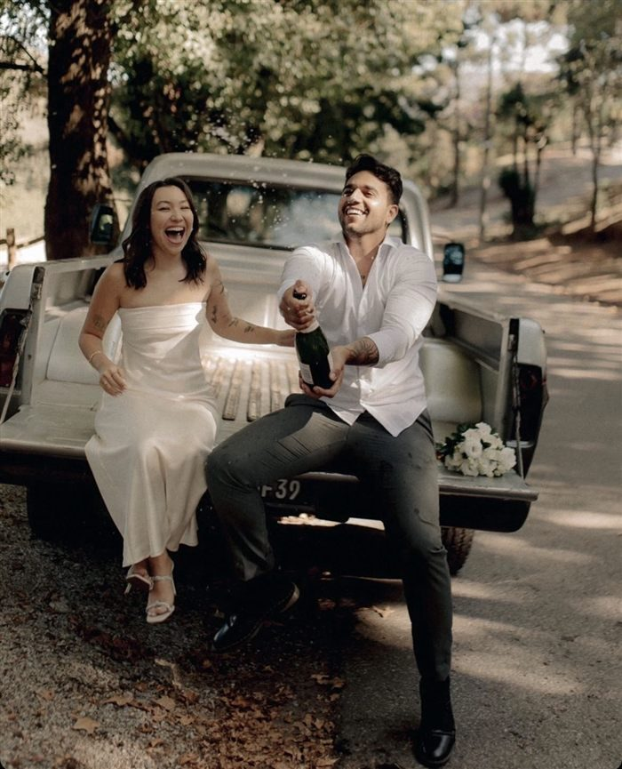

Atendimento individual
Atendimento individual
Terapia com César
Atendimento online, agenda fechada. Se você traiu e quer entender o que está em jogo antes que seja tarde demais.
Agenda fechada — sem vagas
@cesaraugustoo_
Psicanalista especialista em reconstrução após a traição
Psicanalista cristão, casado. Ajudo homens que traíram a entender o que os levou a isso
e a reconstruir o que ainda pode ser salvo.
Mais de 200 homens nesse processo.
Atendimento individual
Atendimento online, agenda fechada. Se você traiu e quer entender o que está em jogo antes que seja tarde demais.
Agenda fechada — sem vagas
Curso onlineVocê traiu. Foi descoberto. E agora não sabe se o que sente é culpa, medo de perder ela ou vontade real de mudar. Este curso foi feito para esse momento exato.
Quero entender o que aconteceu comigo Curso online
Curso online
Você foi traída e não sabe mais o que é real: o amor que sente, a raiva que carrega ou o medo de ficar. O Saber Amar foi criado para a mulher que quer se entender antes de decidir qualquer coisa.
Quero me entender de verdade